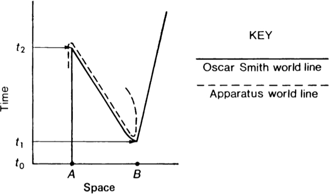

Notes to Time Travel
1. The following selection of cases is not intended to be exhaustive.
2. For this sort of time travel scenario, see for example episodes of the BBC series Doctor Who from the mid to late 1970s (the Fourth Doctor years).
3. For this sort of time travel scenario, see for example the 2006 animated film The Girl Who Leapt Through Time (based on a 1967 novel).
4. For a more detailed description of the case, together with a helpful diagram (reproduced at the end of this footnote: in terms of the description given in the text above, think of t2 in the diagram as 2024 and t1 as 1984), see Putnam (1975, 243–5).

5. For a more detailed description of the case, together with a helpful diagram, see Horwich (1987, 111–4).
6. For more details on this kind of case see Luminet (2012).
7. Well, perhaps even that much isn’t certain: for example, Le Poidevin (2005, 350) wonders whether Gödel really involves genuine time travel.
8. There is another vexed definitional issue in the literature: that of defining ‘time machine’, thought of not as a mysterious device for effecting time travel (as in Doctor and Leap, for example), but as a means of manufacturing CTCs. See for example the entry on Time Machines in this encyclopedia.
9. For an early, brief statement see Williams (1951, 463); for a more detailed pressing of the objection see Holt (1981).
10. This sort of reply is originally due to Smart (1963, 240); it subsequently appears in Horwich (1975, 433), Lewis (1976, 146) and elsewhere. Grey (1999, 58) is not convinced by this reply; Dowe (2000, 447) responds to Grey. For a different kind of reply to the original objection—one that does not invoke frames of reference—see Maudlin (2012, 76–9).
11. For early statements of the distinction see e.g. Brier (1973, 361), Horwich (1975, 435–6) and Dwyer (1977).
12. Vranas (2005) distinguishes two senses of ‘changing the past’: ‘transforming’ and ‘replacing’ the past. He argues that the widespread agreement that changing the past is impossible captures the truth that transforming the past is impossible—but that replacing the past (like affecting the past) is possible.
13. Cf. also the model in Loss (2015), which involves a duplication of times (e.g. two different versions of 1920) without additional temporal dimensions or parallel universes.
14. Hawking (1992) conjectures that backwards time travel is physically impossible—but judging from the passage quoted, he appears to be motivated (at least in part) by the thought that it is logically impossible.
15. For further discussion of the kinds of issues that arise here see Smith (2005).
16. Of course, not universally accepted. For example, see Vranas (2009) for criticism of this response.
17. For a criticism of Vihvelin, see Sider (2002). Further contributions to the debate include Kiourti (2008), Carroll (2010) and Vranas (2010). On a related note, Horacek (2005) argues that it is impossible for the time traveller to kill Grandfather, and yet her chance of success need not be zero.
18. It is not universally agreed that time travel would involve backwards causation. Smeenk and Wüthrich (2012, 13, §3) argue that if causation is conceived as a purely local phenomenon, then time travel scenarios such as Gödel —which involves CTCs—do not involve backwards causation.
19. For an early version of the argument, see Black (1956, 54); for a more recent statement, see Horwich (1987, 92). Versions of the argument have been presented in many other places as well.
20. For more details on this last sort of case see Smith (2005, 392), Hanley (2004, 146–7).
21. Mellor (1998, ch.12) argues in this way against cyclical time and backwards time travel.
22. As does Jan Faye on the first page of the entry on Backward Causation in this encyclopedia.
23. Cf. also Riggs (1991, 78).
24. Le Poidevin (2003, 181) presents the following case: Peter and Jane, aged 20, encounter 40 year old Peter stepping out of a time machine; he gives Jane a diary and instructs her to travel forward 20 years, making a record of her trip in the diary; on arrival she meets Peter, now aged 40, and gives him the diary, instructing him to travel back 20 years and make a record of his trip; on arrival he meets Peter and Jane, aged 20. (A somewhat similar case, involving a notched stick rather than a diary, is presented in Nerlich (1981).) Le Poidevin asks how many entries there are in the diary, and then claims “there does not appear to be a consistent answer to this question”. Smith (2004, 529) and Carlson (2005) both argue that the question can be given a consistent answer.
25. Other metaphysical issues (that have received less attention in the literature) include the compatibility of (different kinds of) time travel with various views on personal identity (see e.g. Horwich (1975, 433 n.6), Lewis (1976, 147–8), Ehring (1997) and Wright (2006)) and with views on the existence of singular propositions (Craig, 1997; Adams, 1997).
26. For more details on this way of presenting these views—together with some caveats about terminology (which is not used uniformly throughout the literature)—see Smith (2011, §2).
27. I don’t mean that the front side—the side you can see in the mirror—is all there is to the person. I mean that standing there, before the mirror, is the entire person.
28. For a book-length discussion of Gödel’s argument, see Yourgrau (1999).
29. A version of the argument does in fact already appear at Godfrey-Smith (1980, 72)—framed as an objection to the possibility of time travel, from an assumption that eternalism is false.
30. Another option is adverbialism. On this view, there are indeed properties such as ‘thin’ (simpliciter)—but there is no such thing as ‘having a property’ (simpliciter). Rather, objects have properties tly. Thus, Bill has the property ‘thin’ t1ly and does not have it t2ly—so again, contradiction is avoided.
31. Similar remarks apply to adverbialism.
32. See Sider (2004) for a reply to Markosian.
33. Grey (1999, §VII) argues that a particular kind of time travel leads to what he calls the double occupancy problem; Dowe (2000, 445–6) offers a solution to the problem; Le Poidevin (2005) argues that Dowe’s reply generates a new problem—the Cheshire Cat problem. Note that these problems are alleged to affect both three- and four-dimensionalists.
34. See e.g. Fulmer (1980, 155), Horwich (1987, 1) (“If the necessary technology [for time travel] will ever become available, why haven’t we encountered visitors from the future?”) and Hawking (1992, 610); cf. also Reinganum (1986).
35. The conclusion is certainly weak: not the impossibility of backwards time travel—merely its non-actuality. What I mean is that furthermore, the argument for this weak conclusion is weak.
36. See e.g. Smith (1998, 158).
37. Thanks to an anonymous referee and to Brian Garrett and Kristie Miller for helpful comments.